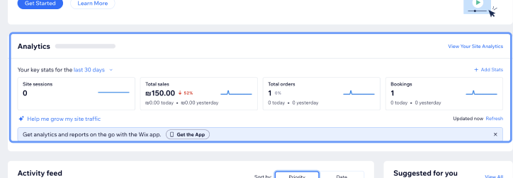

An AI based recommendations built into Checkout Settings that transforms checkout data into guided, data driven optimization.
- Role
- UX/UI Designer
- Team
- PM, BE, FE, BA, QA
- System
- Wix Design System
- Year
- 2025
The problem
Merchants know checkout is critical, but:
- They don’t know where in the flow they’re losing buyers
- They don’t know what to change in checkout settings
- Existing reports are static and hard to translate into action
➔ Result:
- Missed revenue from avoidable drop offs
- Underused capabilities (express checkout, branded checkout, coupons, etc.)
- Support and AMs answering the same “why is my checkout not converting?” question
The solution
An AI Checkout Conversion Agent that sits inside Checkout Settings.
From analytics and guesswork → to guided, data driven optimization.
My role
UX/UI designer on a cross functional team. I framed the problem and use cases, led the research synthesis, defined the Collect, Analyze, Recommend model, and designed the recommendation component and its placement inside Checkout Settings, on the Wix Design System.
User voices
What merchants asked, in their own words, in Wix User Voice and in the Wix AI assistant.
-
“I’m very excited you have a customizable side cart though! … But I have one last question - in the last week, 71 people have added to cart but only 7 checked out. Can anyone help with why it’s so low and how I can increase conversions?”
Wix merchant · Premium, DIY · Wix User Voice -
“I’d like to ask another question: can the checkout process be optimized?”
Wix merchant · Premium, DIY · Wix User Voice -
“I would like to know if there is any option to customize my store checkout, so it is more convenient and has better conversion rate. That includes: brand background color, form label (border, corners), butto…”
Wix merchant · Premium, Target Partner · Wix User Voice -
“applier the best checkout in my website”
Message to the Wix AI assistant -
“I want it to be a one click checkout and high converting”
Message to the Wix AI assistant
Merchants didn't want another chart. They wanted the tool to do the thinking.
I started by looking at how Wix presents analytics today, to understand what a regular user actually sees.

Then we looked at competitors like Shopify, to see whether they offer similar tools and how they present them.
The logs also exposed the failure mode of the generic assistant: it answered, but its answers weren't personalized to the store. Advice that applied to everyone helped no one. So the job of the product became a decision, not more data.
What Is the Checkout Conversion Agent?
A smart layer inside Checkout Settings that:
Insights
- “Your largest drop off is at Customer Details.”
- “Drop off here is higher than similar businesses.”
Recommendations
- “Reduce required fields from 12 to 6.”
- “Enable express checkout for mobile buyers.”
Actions
- Go to Checkout Form
- Enable Express Checkout
- Review Payment Methods
The concept: data, insight, recommendation, action
A smart layer that runs in three steps:
- CollectBuyer, item, locale, industry, season, settings
- AnalyzeAgainst a data model and similar store benchmarks
- RecommendA concrete change to a specific setting
Every insight belongs to one of three families, and each ends in an action:
- Funnel. "30% drop at Customer Details, higher than similar stores."
- Fields. "Company name is required, but most of your buyers are consumers."
- Configuration. "Express checkout isn't enabled."
Percentages are illustrative.
A key decision: one benchmarked number, one action
Before
After
Generic advice is noise. A benchmarked number plus one button is a decision the merchant can actually make. That became the rule for every recommendation.
The design: one component, one anatomy
Every recommendation uses the same structure, so merchants learn to read it once:
- Tag. Which part of checkout it touches.
- Title. The action, not the problem.
- Reasoning. Why, in one sentence, from the store's own data.
- Actions. "Let's do it" makes the change through Aria, Wix's AI assistant. "Show me how" walks the merchant through it.
{ "category": "Delivery", "action": "Add Free Shipping above a minimum amount", "reason": "Paid shipping only increases drop off.",
"metric": { "store": 0.41, "benchmark": 0.57 }, "cta": { "label": "Let's Do It", "via": "Aria" }}Paid shipping only increases drop off. Adding free shipping may improve progression (41% vs. 57%).
Let’s Do ItWhere it lives: next to the settings it changes
The obvious home was a separate analytics tab. I put the agent inside Checkout Settings instead, beside the settings it recommends changing. Seeing a problem and fixing it happen on the same screen.
Iterations
One action, not a menu
- Tension
- Early flows offered several next steps. Merchants froze.
- Call
- One primary action, with a quiet "Show me how" for those who want to do it themselves.
- Why
- A decision beats a menu.
Say "nothing to fix" out loud
- Tension
- An agent that always finds a problem reads as upselling.
- Call
- A positive state: "No changes needed for branding or policies."
- Why
- Honest silence builds trust. An advisor, not a nag.
Reasoning that is grounded and short
- Tension
- Model written reasons could ramble or invent things.
- Call
- Every reason tied to a real signal, capped at about 160 characters, no jargon. Enforced in the prompt and in the UI.
- Why
- Short, data backed reasons are the ones merchants trust.
Making AI trustworthy before it reaches merchants
Under the hood, site context (checkout settings, business profile, warehouse data), a system prompt and a domain knowledge base go through the Wix AI Gateway to a language model, which returns structured recommendations. My part was the merchant facing experience, but understanding the pipeline kept the UI honest about what the data could support.
We validated in stages rather than assuming quality: manual review first, then a model judging output on a sample of sites, then repeated runs across a larger pre release group. The rubric checked:
- Format and length limits (action up to 80 characters, reason up to 160)
- Whether each recommendation was grounded in the store's data
- Category accuracy and quality of action and reasoning
- Prioritization: revenue first, then drop off, then friction
Success was defined as checkout conversion and online sales volume, plus how many recommendations merchants actually acted on.
Reflection
TODO: 3–4 sentences in your voice. The hardest tension (surfacing AI insight without overwhelming a non expert merchant), what you'd do differently, and what working on a real product taught you that a concept couldn't.